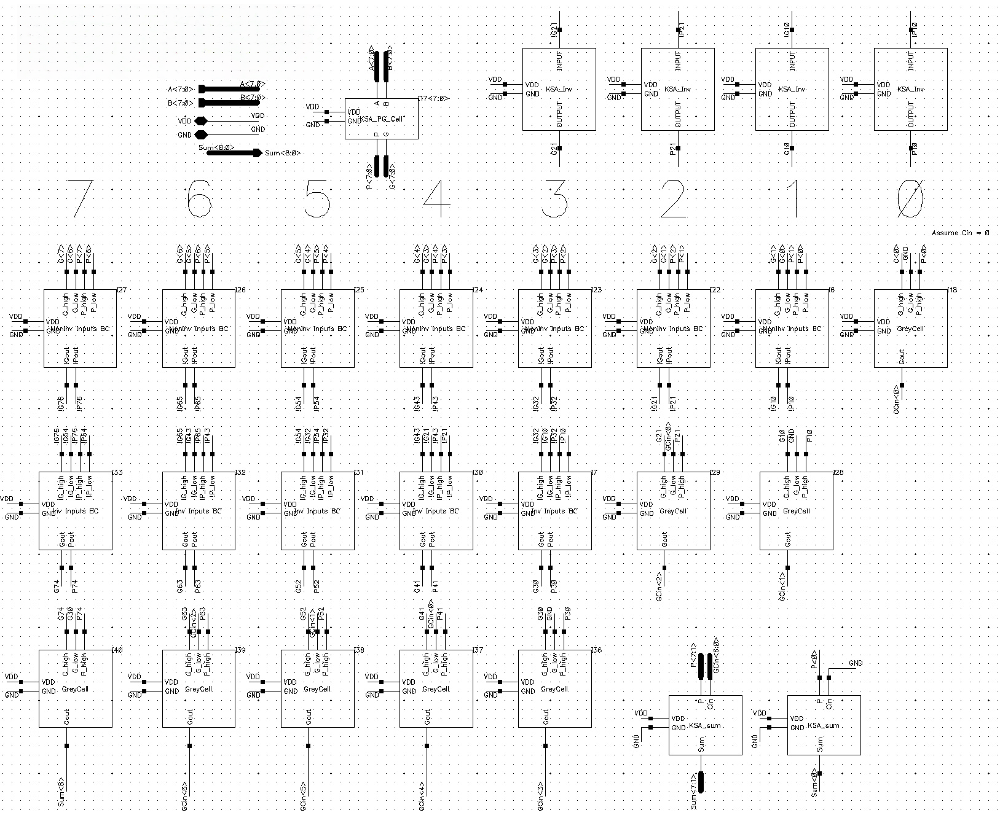
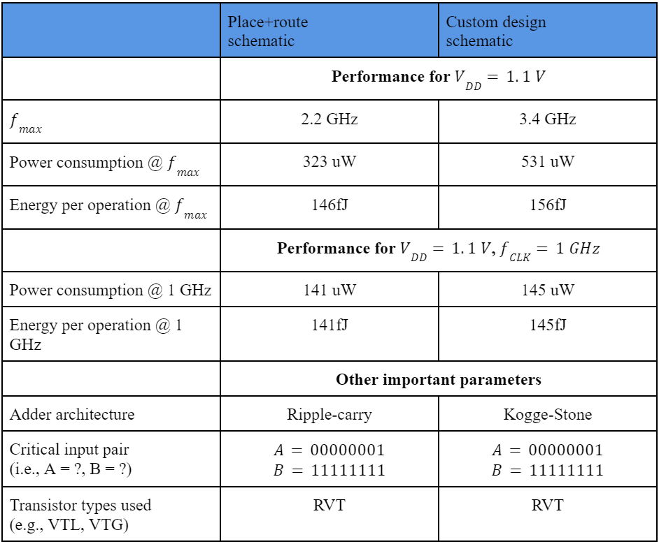

This project implements a high-speed, 8-bit Kogge-Stone Adder (KSA) implemented using static CMOS logic in Cadence, designed for minimum delay, reduced transistor count, and robust signal integrity at the transistor level.

The design achieves logarithmic delay and is well-suited for large-scale arithmetic circuits where speed is critical.

For more details, check out the GitHub repository!